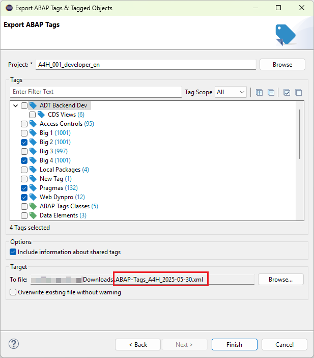

Use this page to select the ABAP Tags you wish to export.
The assigned objects of each selected tag will be automatically exported as well

Page to select the content for export
Options
-
Include information about shared tags
If checked, the users for which a user tag is shared
will also be exported
Keyboard Shortcuts (focus on tree control)
| Shortcut |
Function |
| Ctrl + F |
Jump to the filter field |
| Ctrl + → |
Expand All |
| Ctrl + ← |
Collapse All |